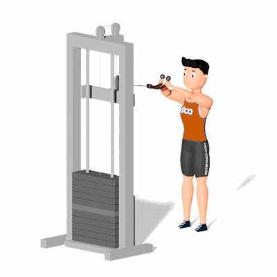

Face Pull

É um exercício muito útil para o fortalecimento de músculos da região dorsal e uma boa ferramenta para corrigir problemas posturais causados pelo desequilíbrio entre os músculos do peitoral e das costas.
Ficha Técnica
Tipo: Musculação
Grupo Muscular: Ombro
Aparelho: Nenhum
Músculos: Nenhum
Como realizar
- Em primeiro lugar é necessário ajustar a polia do cross over mais ou menos na altura do peito;
- Ajustar uma corda na polia;
- Segurar a corda e puxá-la na direção dos olhos e depois contrair ao máximo o trapézio, aduzindo ao máximo as escapulas, lembrando sempre de manter os cotovelos na altura dos ombros;
- Retornar lentamente à posição inicial e repetir o processo pelo número de vezes estipulado anteriormente.
 RC STORE
RC STORE